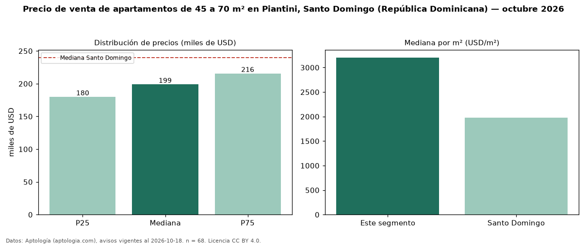

Precio de venta de apartamentos de 45 a 70 m² en Piantini, Santo Domingo (República Dominicana) — octubre 2026
En Piantini, Santo Domingo (República Dominicana), la mediana de precio de venta de apartamentos de 45 a 70 m² es USD 199.000, según 68 avisos vigentes. Frente a la mediana de todos los apartamentos en venta de Piantini (USD 340.000, n = 654), queda 41 % por debajo; este segmento reúne el 10 % de esos avisos. Por metro cuadrado, la mediana es USD 3.204/m² (n = 66), 22 % por encima del conjunto de referencia (USD 2.633/m²). El área mediana anunciada es 62 m². El segmento con más oferta es el de 1 habitación (67 avisos, mediana USD 199.000). La mediana de todos los apartamentos en venta de Santo Domingo es USD 240.000 (−17 % de diferencia). La mitad central de los avisos va de USD 179.888 a USD 215.625 (razón 1,2), una dispersión baja. Datos: Aptología (aptologia.com), CC BY 4.0 — https://www.aptologia.com/do/venta/santo-domingo/piantini. Archivos: PDF, CSV con las cifras y gráfica PNG.

| Avisos únicos | 68 |
|---|---|
| Percentil 25 | COP 179.887 |
| Mediana | COP 199.000 |
| Percentil 75 | COP 215.625 |
| Mediana por m² | COP 3.204 |
Fuente: avisos vigentes de portales inmobiliarios recopilados por Aptología, deduplicados (mínimo 30 avisos únicos por celda). Precios pedidos, no cerrados. Fecha: 2026-10-18.